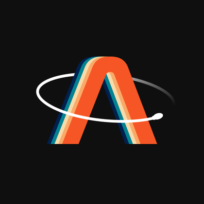

Acceleration body frame
X0.00g
Y0.00g
Z0.00g

ATHENA
NO DATA
connect the MPU or TPU USB port, or run the demo
Gyroscope bias removed
X0.0°/s
Y0.0°/s
Z0.0°/s
Flight
IN FLIGHT
GPS FRESH
BARO
MAG
ORIGIN
IMU1IMU2IMU3
Altitude fused vs barometer, m
Attitude & GPS
- roll / pitch / yaw
- 0.0 / 0.0 / 0.0 °
- fix
- none
- latitude
- -
- longitude
- -
- height MSL
- -
- ground speed
- -
- magnetometer
- -
- link
- 0 frames, 0 bad